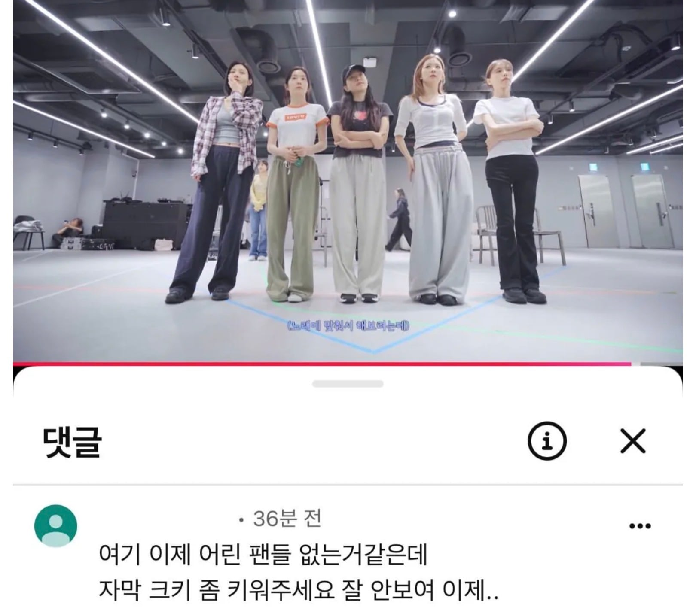

72 · 15 · 4 시간 전 · 원문

ㅋㅋㅋㅋㅋㅋㅋㅋ
수집 당시 댓글 15개
유아학교 · 6 시간 전
개듸리퍼 · 6 시간 전
뻘건맛
↳ 답글 · 으으으으으으그 · 5 시간 전
뻘건맛 ㅇㅈㄹ ㅋㅋㅋㅋ
↳ 답글 · 설윤 · 4 시간 전
궁금해 여보
↳ 답글 · 야율아보기 · 4 시간 전
붉은맛
Ultragear · 5 시간 전
좆냥이는닥붐 · 5 시간 전
티비조선이냐구 ㅋㅋㅋ
댕댕이매니아 · 4 시간 전
키우는 김에 테두리도 좀 넣지 아오 ㅋㅋ
렙에이거적을려고들어왔다 · 4 시간 전
자막크기도 크기지만 테두리랑 컬러가
Rldydhd · 4 시간 전
ㅋㅋㅋㅋㅋㅋㅋㅋㅋㅋㅋ
아무것도아닌 · 4 시간 전
크기도 크키라고 쓴거 존나열받음
↳ 답글 · 더블대시 · 3 시간 전
슬슬 오타도 늘기 시작하는 나이라서
↳ 답글 · 아무것도아닌 · 3 시간 전
오타보다는 뭔가 한국인의 발음체계가 희한해지는거같음 자꾸 예사소리를 거센소리로 바꿔내더라고
뿔꼬끼 · 4 시간 전
ㅋㅋㅋㅋㅋㅋㅋㅋㅋ아오
몬스터에너지제로슈거 · 2 시간 전
웬디 뭐 성형중독 + 거식증 얘기 나오고 걱정된다 이런 반응 많았는데 요즘은 괜찮나?
댓글
수집 당시 댓글 15개
유아학교 · 6 시간 전
개듸리퍼 · 6 시간 전
뻘건맛
· 으으으으으으그 · 5 시간 전
뻘건맛 ㅇㅈㄹ ㅋㅋㅋㅋ
· 설윤 · 4 시간 전
궁금해 여보
· 야율아보기 · 4 시간 전
붉은맛
Ultragear · 5 시간 전
붉은맛
좆냥이는닥붐 · 5 시간 전
티비조선이냐구 ㅋㅋㅋ
댕댕이매니아 · 4 시간 전
키우는 김에 테두리도 좀 넣지 아오 ㅋㅋ
렙에이거적을려고들어왔다 · 4 시간 전
자막크기도 크기지만 테두리랑 컬러가
Rldydhd · 4 시간 전
ㅋㅋㅋㅋㅋㅋㅋㅋㅋㅋㅋ
아무것도아닌 · 4 시간 전
크기도 크키라고 쓴거 존나열받음
· 더블대시 · 3 시간 전
슬슬 오타도 늘기 시작하는 나이라서
· 아무것도아닌 · 3 시간 전
오타보다는 뭔가 한국인의 발음체계가 희한해지는거같음 자꾸 예사소리를 거센소리로 바꿔내더라고
뿔꼬끼 · 4 시간 전
ㅋㅋㅋㅋㅋㅋㅋㅋㅋ아오
몬스터에너지제로슈거 · 2 시간 전
웬디 뭐 성형중독 + 거식증 얘기 나오고 걱정된다 이런 반응 많았는데 요즘은 괜찮나?